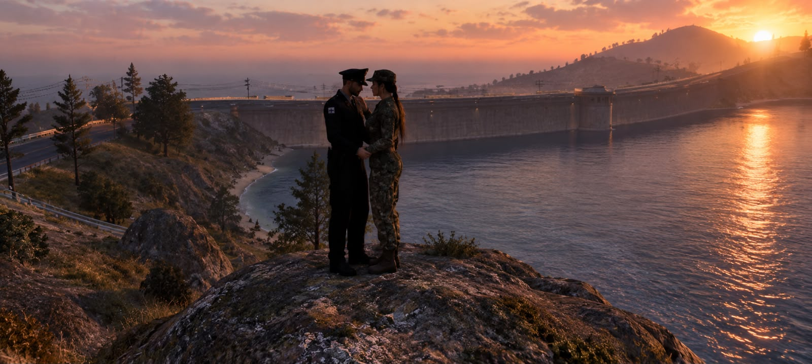
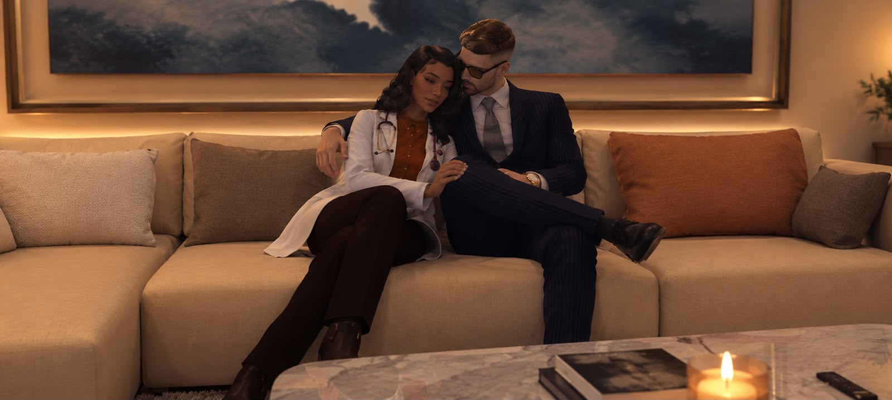
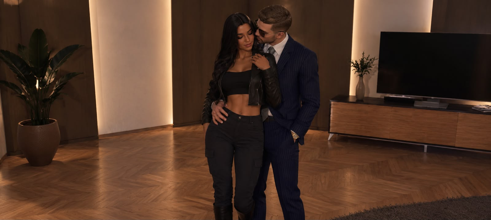

Ven, quiero mostrarte algo…
Quiero que entres en esta pequeña página y que te pasees un poquito por los sentimientos que tengo por ti, por esos momentos que guardo en mi corazón y por la felicidad tan bonita que siento de haberte encontrado.
Quiero que aquí encuentres un pedacito de nosotros: nuestros momentos, nuestras sonrisas, nuestras locuras, nuestro toque sensual y todas esas pequeñas cosas que hacen que lo nuestro sea tan especial.
Porque, si algo tengo claro, es que todo para mí contigo tiene algo maravilloso. Hasta las cosas más sencillas se vuelven especiales cuando se trata de ti.
Así que ven, mi amor… esta pequeña parte de mi mundo también es para ti. ❤️🔥

Quizá el destino tenía otros planes…
Aquel 5 de agosto, en un lago, la vida nos regaló un reencuentro que jamás imaginé que llegaría a significar tanto para mí. Volvimos a coincidir, sin que yo pudiera imaginar todo lo que ese momento terminaría despertando en mi corazón.
Si alguien me hubiera dicho ese día que llegarías a ser tan importante para mí, que terminaría guardando tantos sentimientos por ti y que tu presencia ocuparía un lugar tan bonito en mi vida, probablemente no lo habría imaginado.
Y, sin embargo, aquí estoy, mirando aquel recuerdo y pensando en lo curioso que es el destino. A veces nos vuelve a cruzar con alguien sin avisarnos de que ese reencuentro puede convertirse en el comienzo de algo que jamás supimos que necesitábamos.
No sé cómo explicarte todo lo que siento por ti. Es algo que va más allá de las palabras, algo tan profundo que incluso cuando intento describirlo siento que me quedo corta. Quizá la palabra sea inconmensurable: eso que se siente con tanta intensidad que ningún conjunto de palabras parece suficiente para explicarlo.
Y pensar que todo comenzó con un reencuentro junto a un lago… Qué bonito que la vida nos volviera a encontrar. ❤️🩹

Y descubrí que aún me faltaba mucho por conocer de ti…
Ese día descubrimos que todavía había muchas cosas del otro que no conocíamos, facetas que aún no habíamos tenido la oportunidad de descubrir y pequeños detalles que terminaron sorprendiéndonos de la mejor manera.
Fue bonito conocer un poquito más de ti, descubrir esas partes de tu personalidad que todavía no había visto y encontrarme con detalles que me encantaron. Pero lo más curioso fue descubrir que, detrás de todo lo que ya conocía de ti, había mucho más por explorar.
Y bueno… 🤭 digamos que algunas de esas facetas no solo despertaron mi curiosidad, sino también mi lado más travieso. Porque una cosa es conocerte, otra es descubrir tus locuras y otra muy distinta es encontrar esa complicidad entre nosotros que hace que una simple mirada, una sonrisa o un pequeño acercamiento puedan decir muchísimo sin necesidad de hablar.
Me encantó descubrir esa versión de ti que quizá no todos conocen, esa que aparece cuando estamos en nuestro propio mundo, cuando dejamos de pensar tanto y simplemente disfrutamos de estar juntos. Fue maravilloso descubrir que entre nosotros podía existir ternura, diversión, confianza y también esa chispa que hace que todo se sienta un poquito más intenso. ❤️🔥
Y si algo aprendí ese día, es que todavía me quedaban muchísimas cosas por descubrir de ti… y créeme, mi amor, pienso disfrutar de cada una de ellas. 😘💋

Y ese día, nuestros corazones hablaron a través de la música… 🎶❤️🔥
Nuestro primer aniversario fue uno de esos momentos que quisiera guardar para siempre. Yo te dediqué unas palabras desde el corazón y tú me regalaste algo igual de especial: tu música. 🥹❤️
No sé si alguna vez lograrás comprender lo bonito que fue para mí escucharte, saber que aquellas palabras y melodías nacían de ti y que, en ese instante, estabas compartiendo conmigo algo tan personal. Porque hay regalos que no necesitan envoltura, y escuchar a la persona que amas expresarte sus sentimientos a través de su propia voz es uno de esos detalles que se sienten mucho más de lo que se pueden explicar.
Y si algo guardaré siempre de aquel día, será la felicidad de haberlo vivido contigo. 💗🎶

Y sin darme cuenta, me enamoré un poquito más de ti… ❤️🔥
Aquel día fue muy especial para mí. Verte conocer a nuestro hijo y comprobar lo bien que se llevaron fue algo que guardé con muchísimo cariño en mi corazón. 🥹❤️
Y después llegó nuestro momento, ese en el que parecía que el mundo podía esperar. Solo estábamos tú y yo, la música de fondo, tu voz cantándome y nosotros bailando, compartiendo una felicidad tan bonita que no necesitaba nada más.
Mientras te escuchaba y me perdía en tus ojos, sentía que mi corazón volvía a elegirte, pero esta vez con más fuerza. Y así, entre canciones, bailes y pequeños instantes, terminé enamorándome todavía más de ti… hasta sentir que me estaba perdiendo por completo en ese amor tan bonito que estaba naciendo dentro de mí. ❤️🩹🎶

Contigo, hasta las locuras tienen otro sabor… 🤭❤️🔥
Estábamos de vacaciones, sin tantas preocupaciones y con tiempo para dedicarnos a lo que más nos gustaba: disfrutar juntos, hacer nuestras locuras y dejarnos llevar por el momento.
Porque tú y yo, mi amor, tenemos una manera muy nuestra de convertir cualquier día en una aventura. Entre risas, ocurrencias y esa complicidad que compartimos, terminamos creando recuerdos que van mucho más allá de una simple fotografía. 😏💋
Y es que contigo me encanta esa libertad de poder ser yo misma, sacar mi lado más alocado, molestarte, provocarte una que otra sonrisa y disfrutar de esa química tan nuestra que, a veces, ni siquiera necesita palabras. 🤭❤️🔥
Si algo quiero seguir haciendo contigo, es coleccionar días así: espontáneos, divertidos, llenos de cariño y con alguna que otra locura que mejor dejamos entre nosotros. Porque, mi amor, contigo hasta portarme mal puede convertirse en uno de mis pasatiempos favoritos. JAJAJA. 😈💗
Que la música diga lo que siento… 🎧
Hay canciones que parecen una oración por la persona que amamos; esta me recuerda todo lo que le pediría a la vida para seguir compartiéndola contigo. ❤️
El día que nuestro para siempre comenzó… 💍🌙
Hay momentos que se quedan a vivir para siempre en el corazón. Este es uno de ellos: el día en que me pediste que fuera tu esposa. ❤️
Aquel día no fue uno más en nuestra historia. Fue el día en que tus palabras hicieron que nuestro amor se sintiera todavía más real, el día en que me pediste que fuera tu esposa y comenzamos a escribir un capítulo completamente nuevo de nuestras vidas.
¿Ser tu esposa? Sí, mi amor. Pero también ser tu compañera, tu amiga, tu refugio y esa persona con la que puedas seguir siendo tú mismo, incluso en los días en los que el mundo pese demasiado. Quiero celebrar tus victorias, abrazarte en tus derrotas y seguir eligiéndote cuando la emoción de los grandes momentos se convierta en la tranquilidad de los días cotidianos.
Ese día marcó un antes y un después en nuestra historia. Desde entonces,